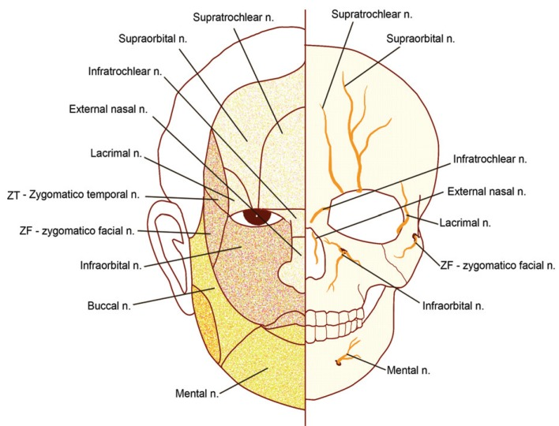
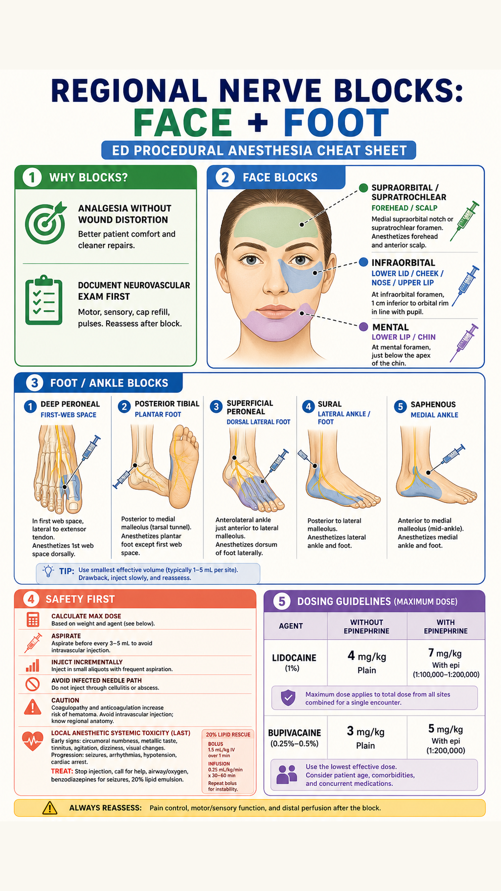
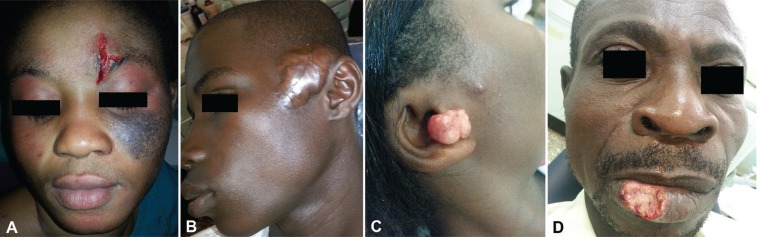
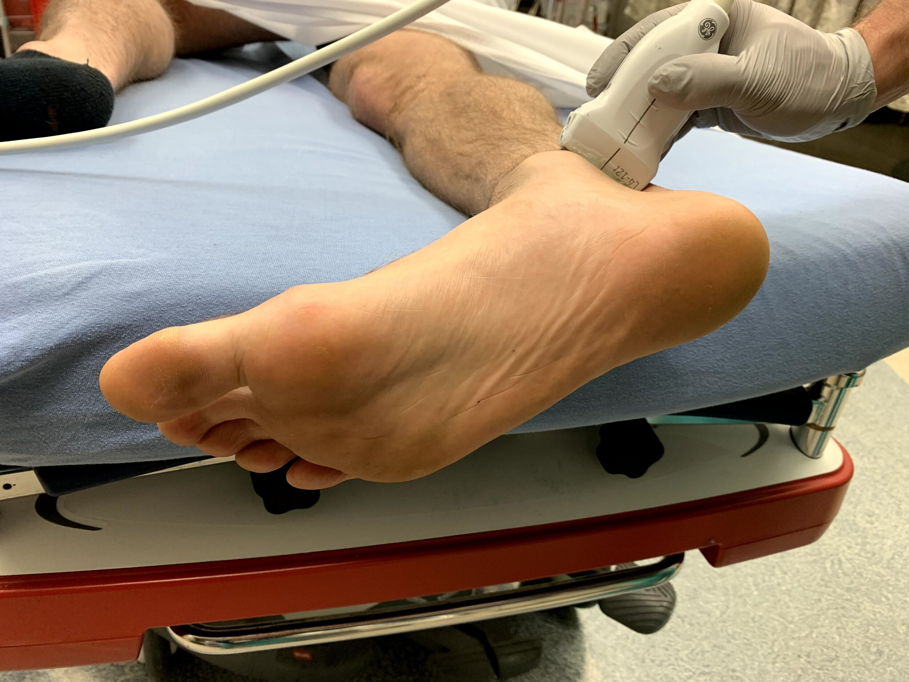
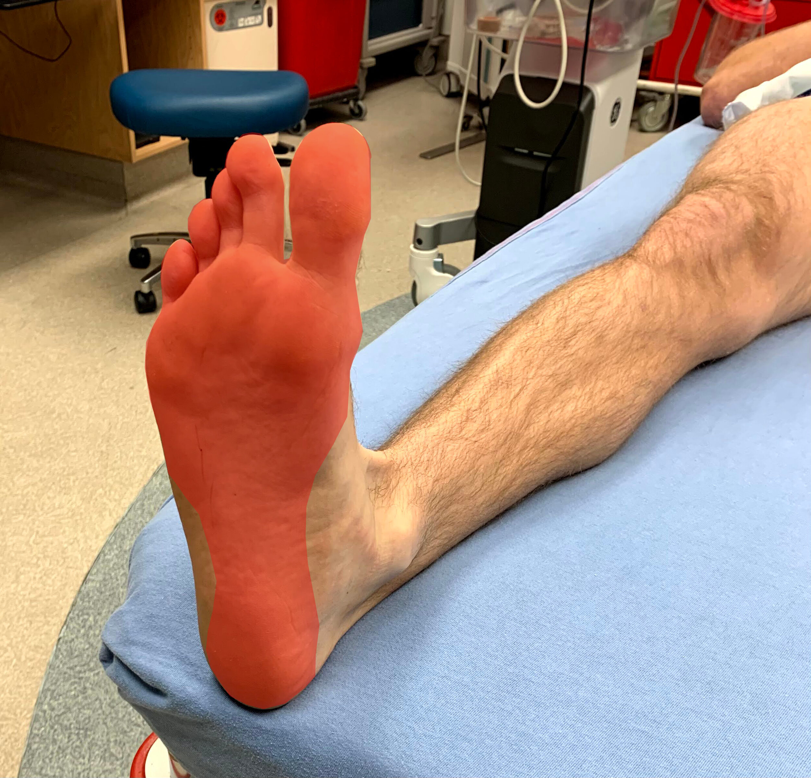
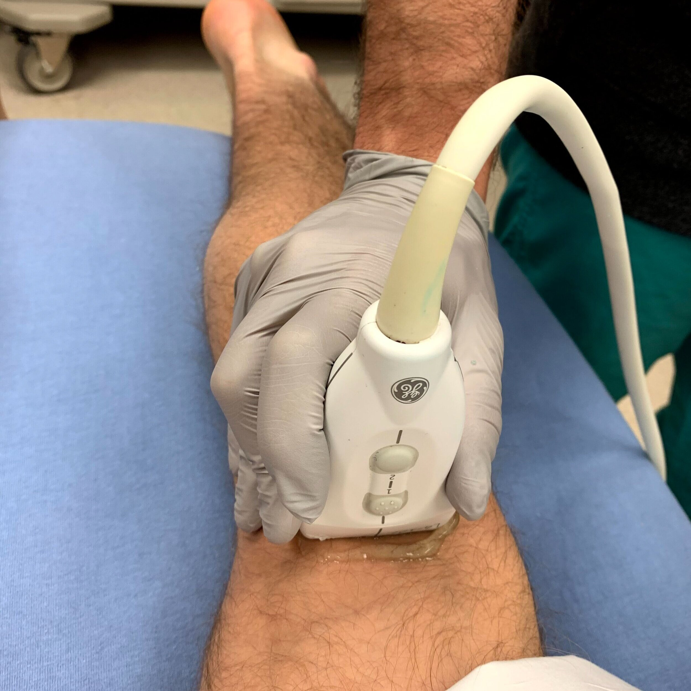
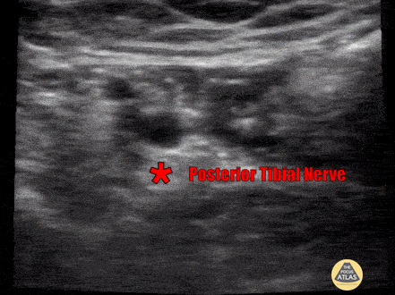

Face: infraorbital cutaneous distribution
Frontal skin/skeletal cutaneous nerve distribution emphasizing the infraorbital nerve.
Kim SM et al., Journal of Dental Anesthesia and Pain Medicine, Fig. 4, PMC5564189. License: CC BY-NC 3.0.

image_gen, then fitted to 2160x3840 and upscaled to 4320x7680. The old deterministic diagram poster is no longer referenced. Real medical reference images are embedded below from open-license sources with attribution; they are not AI-generated.
Frontal skin/skeletal cutaneous nerve distribution emphasizing the infraorbital nerve.
Kim SM et al., Journal of Dental Anesthesia and Pain Medicine, Fig. 4, PMC5564189. License: CC BY-NC 3.0.

Representative maxillofacial cases treated under regional anesthesia.
Kim SM et al., Journal of Dental Anesthesia and Pain Medicine, Fig. 2, PMC5564189. License: CC BY-NC 3.0.

Probe position for ultrasound-guided posterior tibial nerve block.
The POCUS Atlas, Lower Extremity Nerve Blocks Image Atlas. License: CC BY-NC 4.0.

Medial ankle target area for posterior tibial block near the malleolus.
The POCUS Atlas, Lower Extremity Nerve Blocks Image Atlas. License: CC BY-NC 4.0.

Reference probe position for sciatic coverage proximal to ankle-level terminal branches.
The POCUS Atlas, Lower Extremity Nerve Blocks Image Atlas. License: CC BY-NC 4.0.

Ultrasound reference clip for posterior tibial nerve block anatomy.
The POCUS Atlas, Lower Extremity Nerve Blocks Image Atlas. License: CC BY-NC 4.0.
Primary content source: Tintinalli's Emergency Medicine, 9th ed local PDF text extract, Chapter 36: local anesthetic pharmacology, dose ceilings, LAST, regional anesthesia safety, foot/ankle blocks, and facial nerve blocks. Local extract saved at source_extracts\regional_nerve_blocks_foot_face_forehead_redo_real_images_tintinalli9_extract.txt.
External image/procedure references: Kim SM et al. Regional anesthesia for maxillofacial surgery in developing countries (PMC, CC BY-NC 3.0); The POCUS Atlas lower extremity nerve blocks (CC BY-NC 4.0 content license); NCBI StatPearls supraorbital nerve block; NCBI StatPearls infraorbital nerve block; NCBI StatPearls mental nerve block.